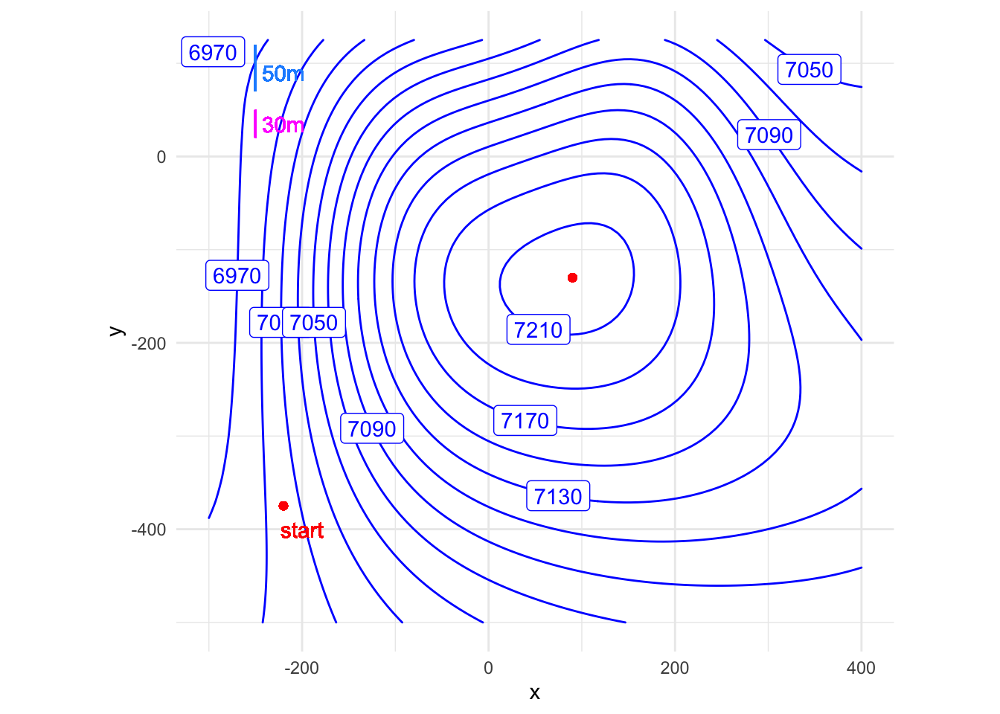

Week 11 Modeling Assignment
A nice walk up a hill
modeling project
physiology
Remember to hand in your work …
At any point, you can submit your answers by collecting them and uploading them to the class site.
No answers yet collected
If the answers that have been loaded automatically are not yours, press this button before starting your work:
Picking up from our discussion on Thursday 3 April about walking energetics …
The American College of Sports Medicine (ACSM) model of power consumption (watts, joules/min, horsepower, \(\dot{V}_{0_2}\), etc. are units) when walking on an incline at grade \(g_\text{path}\) is1:
\[P = (h + w g_\text{path}) V \tag{1}\]
- Part a
- What must be the u-dimension of \(h\) and \(w\) for Equation 1 to be dimensionally consistent. (\(g_\text{path}\) has u-dimension L/L., while power has u-dimension ML2T-3.)
dimension-h-w
The physics quantity “work” (u-dimension: energy) is power times time, so consider walking for a time \(t_d\) to get us a distance \(d\):
\[E = P t_d = (h + w g_\text{path}) V t_d = (h + w g_\text{path}) d \tag{2}\]
Remember that the objective of walking this distance \(d\) was to get the hiker to an elevation of 1000m. \(d\) is the hypothenuse of a right triangle, so what is the correct relationship between \(d\) and the gradient.
- Part b
- Horizontal distance to climb 100 m as a function of grade.
walk-d-at-g
In other words, \(d\) is a function of \(g_\text{path}\), that is \(d(g_\text{path})\). Substitute the formula for this function—from the correct answer to Part b—into Equation 2 to get an expression for \(E(g_\text{path})\).
- Part c
- Graph the function \(E(g_\text{path})\) over an appropriate domain to determine if there is a minimum and, if there is, the corresponding argmin. This is the answer we sought: the grade that makes getting uphill as energy-efficient as possible. You’ll have to choose an appropriate domain for \(g\), but that shouldn’t be hard since you’re familiar with walking uphill. The argmin will be a specific value for \(g\) within that domain.
Enter your graphing code in the Code submission text-entry.
This box connects to the “collect answers” button.
If you need to, do computations on the side to check things out!
More on-the-side computations if you need.
- Part d
- One way to help people visualize your recommended grade … Pick a few real-world examples of paths, both steep and shallow. For example, there’s the Manitou incline near Colorado Springs as an example of a steep hike. Heartbreak Hill in the Boston Marathon has earned its name. Another example, pick a couple of streets in San Francisco, perhaps one with a cable-car running along it. Paste the URLs of the images that you like into the answer box.
Figure 1 shows an imagined hill with contours drawn at intervals of 10. All units, horizontal and vertical, are in meters.
- Part e
- To illustrate drawing a segment of an appropriate path on a contour map, imagine that you have selected a grade of 30% for your trail. In Figure 1, adjacent contours are spaced by 20m elevation. How long horizontally should a 30%-grade straight segment be that starts on one segment and ends on an adjacent segment?
iwp-8ha
- Part f
- Draw a path from the starting mark to the top of the hill that is at the optimal grade for walking. (You don’t need to have an exact answer, just a reasonable approximation.) A good way to proceed is to draw a short, straight segment from the starting point on one contour to the appropriate place at the next contour.

Footnotes
I’ve reformulated this to be consistent with the physiology literature↩︎